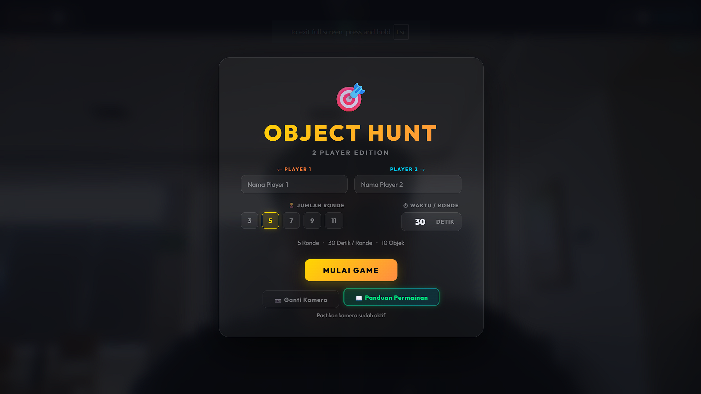
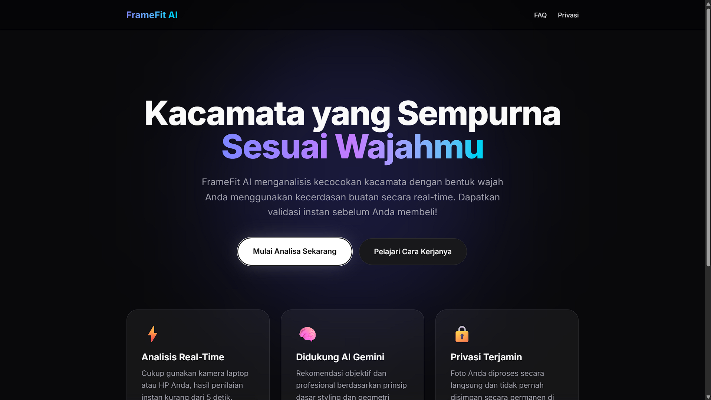
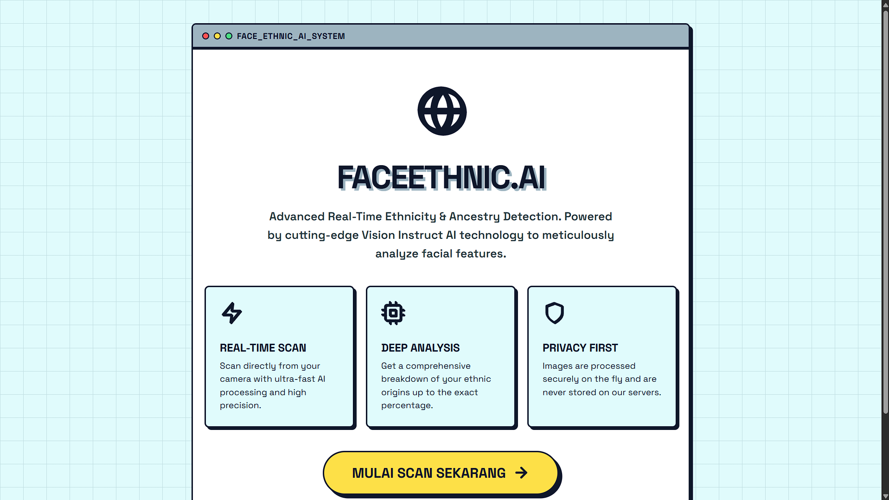
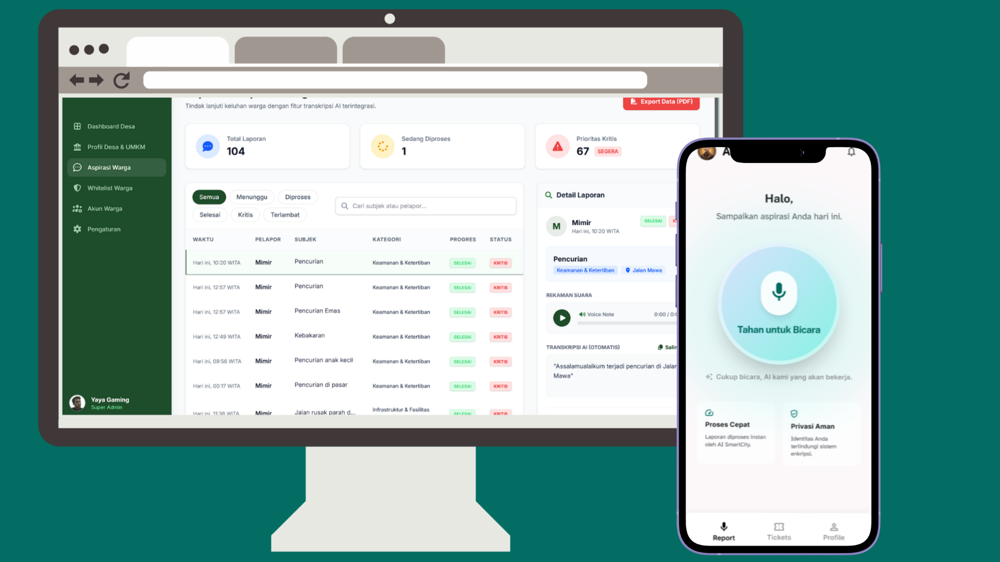
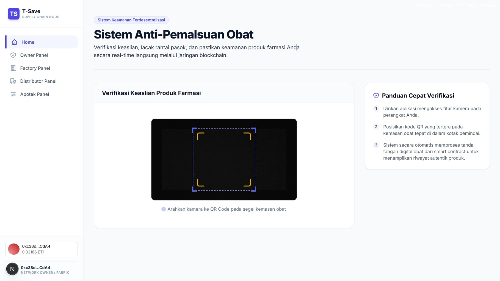
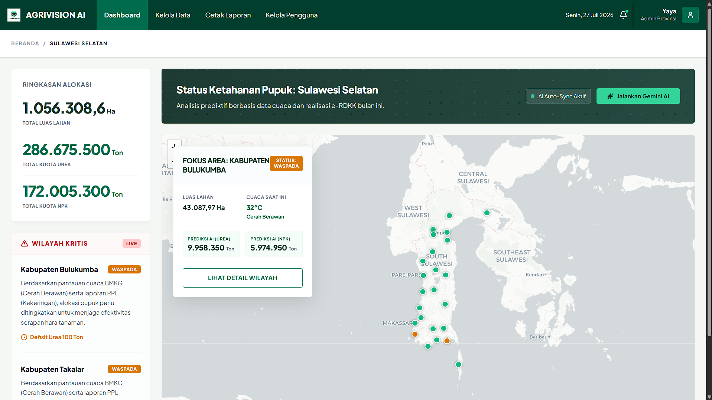
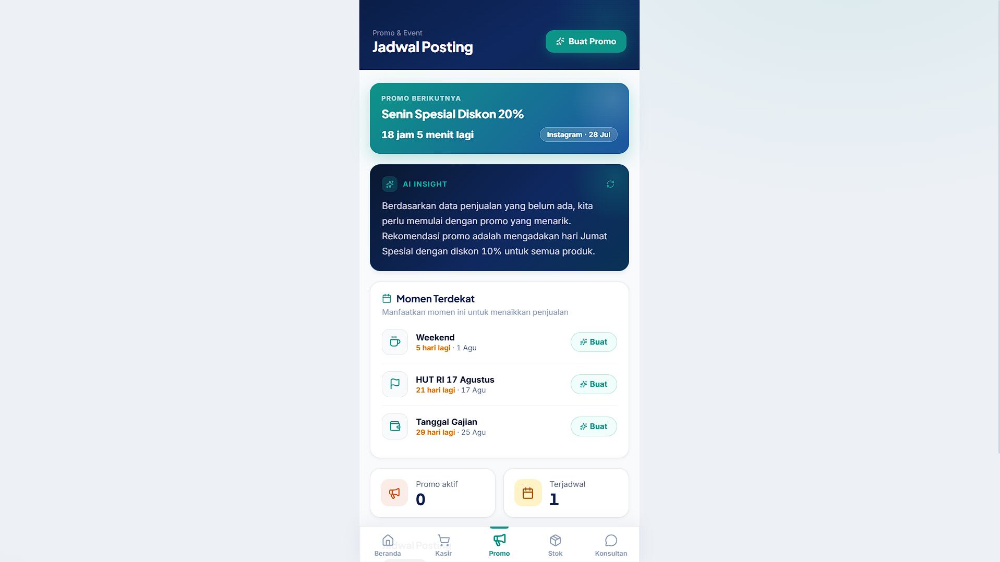
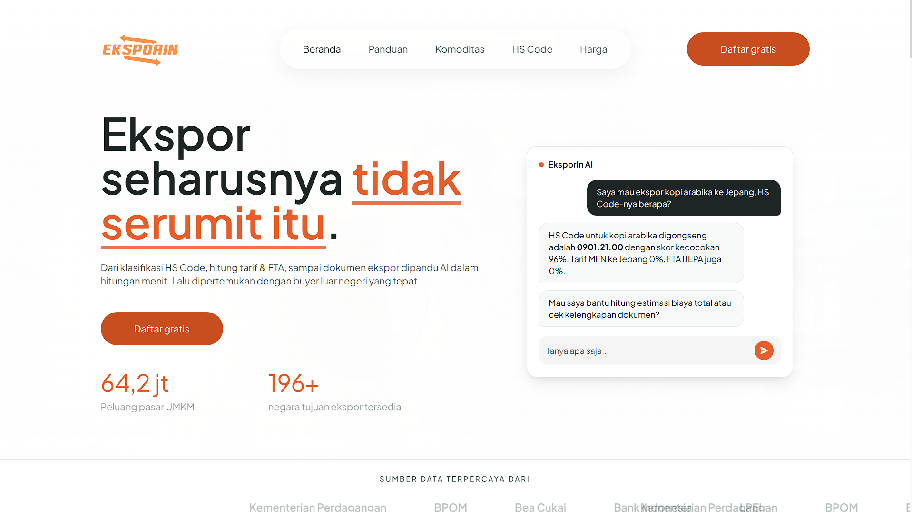
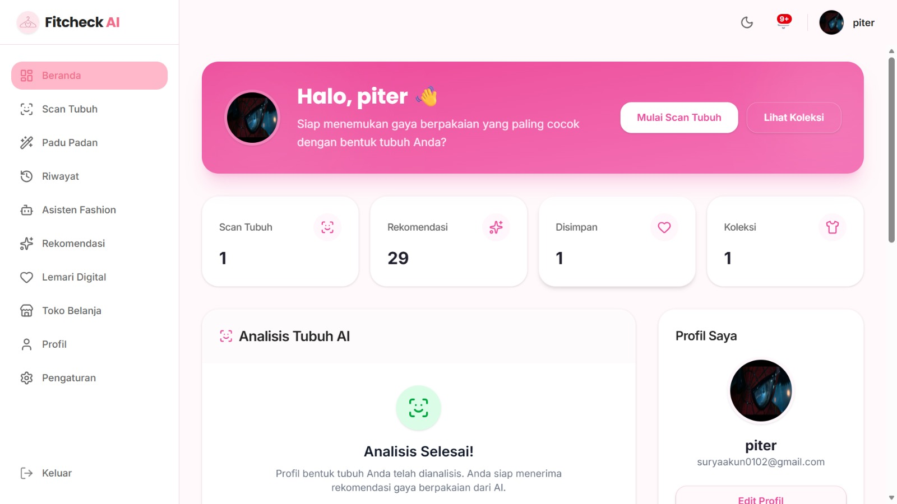

Proyek Selama Praktek Industri
Rangkuman seluruh proyek yang dikerjakan selama program Praktek Industri — mencakup pengembangan backend, dashboard operasional, dan eksplorasi solusi kecerdasan buatan berbasis data.
Proyek Apilogy
Rangkaian proyek pengembangan platform yang menggunakan API & Teknologi AI

Object Hunt adalah game web interaktif yang mengggunakan API Object Detection dari Apilogy untuk menguji kecepatan pemain dalam mencari dan menunjukkan benda nyata (seperti botol atau buku) ke kamera sesuai instruksi, di mana pemain tercepat yang terdeteksi kamera akan meraih poin untuk menjadi pemenang.

FrameFit AI adalah aplikasi web berbasis AI (Gemini) yang menilai kecocokan kacamata dengan bentuk wajah Anda secara real-time melalui kamera, lengkap dengan skor dan rekomendasi gaya.

FACEETHNIC.AI adalah Website berbasis kecerdasan buatan (AI Vision) dengan API LLM dari Apilogy yang dirancang untuk mendeteksi dan menganalisis asal-usul etnisitas serta garis keturunan (ancestry) seseorang secara real-time melalui pemindaian wajah.

Solusi dokumentasi yang selalu sinkron dengan kode sumber.
Proyek AI
Eksperimen dan implementasi solusi AI berbasis data

ASPIRA AI adalah platform pengaduan masyarakat desa berbasis suara (voice-to-text) yang memanfaatkan Kecerdasan Buatan (AI) untuk mengubah keluhan lisan warga menjadi data terstruktur yang siap ditindaklanjuti oleh perangkat desa.

T-Save menjamin keaslian obat melalui verifikasi chain dan pemindaian kemasan fisik Berbasis AI.

AgriVision AI adalah sistem prediktif berbasis AI untuk mengoptimalkan alokasi pupuk bersubsidi berdasarkan data cuaca.

GrowMate AI adalah sebuah platform bisnis berbasis kecerdasan buatan yang dirancang untuk membantu usaha menengah seperti coffeeshop, restoran, dan minimarket di Indonesia

EksporIn adalah sebuah platform berbasis Artificial Intelligence (AI) yang dirancang khusus untuk membantu Usaha Mikro, Kecil, dan Menengah (UMKM) di Indonesia menavigasi proses ekspor barang ke luar negeri.

Fitcheck AI ini adalah sebuah platform web asisten fashion pribadi berbasis Kecerdasan Buatan (AI). Aplikasi ini dirancang untuk membantu pengguna menemukan gaya pakaian (outfit) yang paling sesuai dengan karakteristik fisik mereka.